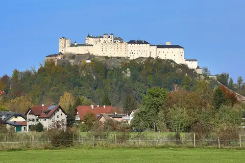
Forteresse de Hohensalzburg
Salzbourg · Military fortress
FreeCatalog
156 forts, castles and palaces in 38 countries. Search by name, city or country, or filter by continent.

Salzbourg · Military fortress
Free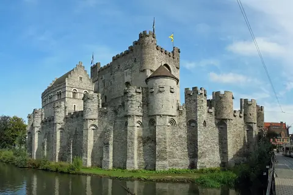
Gand · Military fortress
Free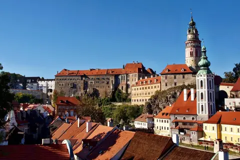
Český Krumlov · Residential castle
Free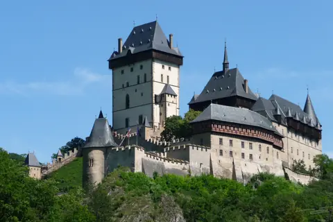
Karlštejn · Military fortress
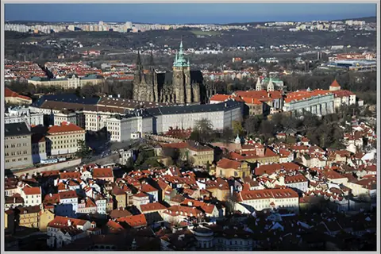
Prague · Fortified palace
Bard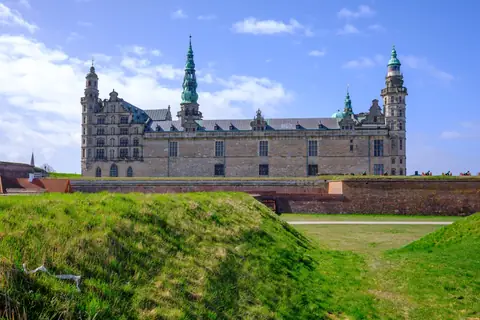
Helsingør · Coastal / maritime fort
Free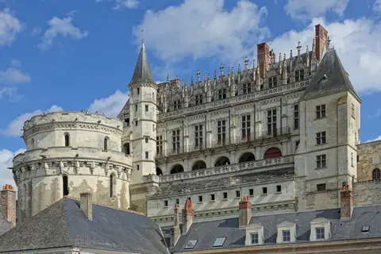
Amboise · Royal palace
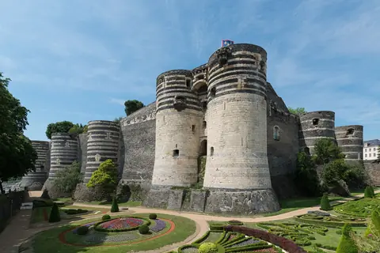
Angers · Military fortress
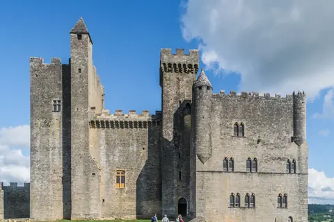
Beynac-et-Cazenac · Military fortress
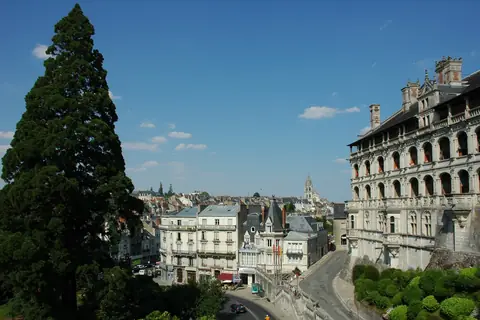
Blois · Royal palace
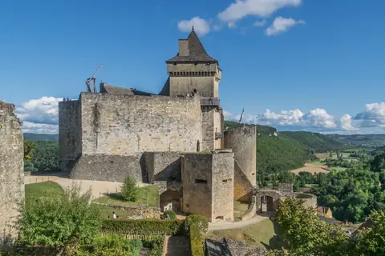
Castelnaud-la-Chapelle · Military fortress
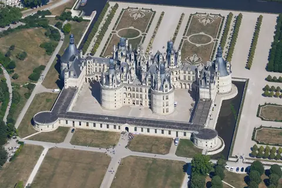
Chambord · Residential castle
Bard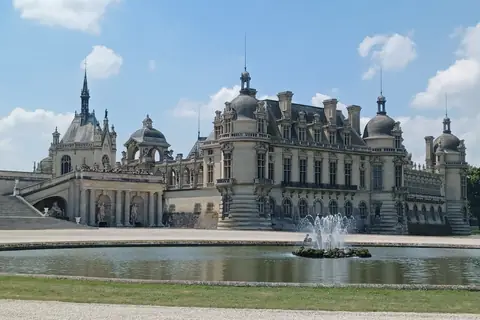
Chantilly · Residential castle
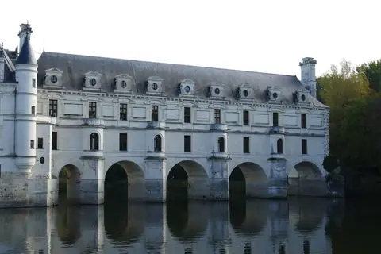
Chenonceaux · Residential castle
Free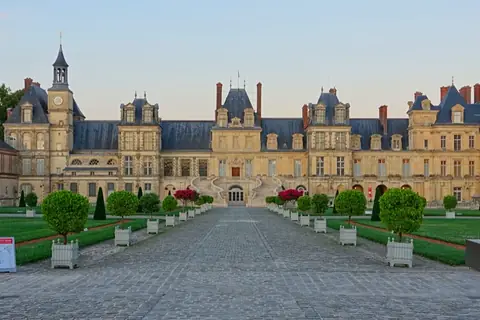
Fontainebleau · Royal palace
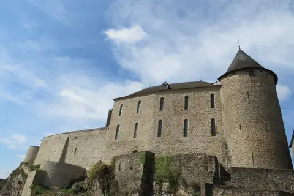
Mayenne · Fortified palace
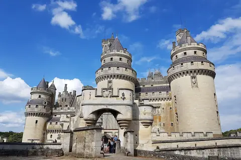
Pierrefonds · Residential castle
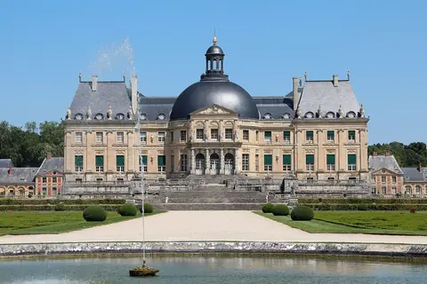
Maincy · Residential castle
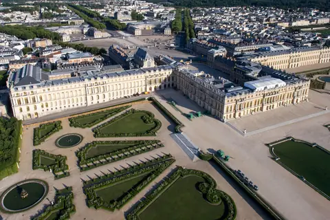
Versailles · Royal palace
Bard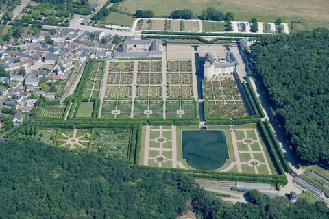
Villandry · Residential castle
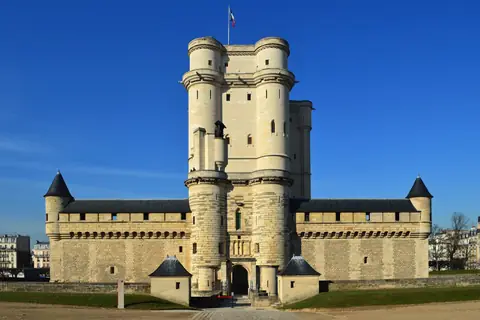
Vincennes · Military fortress
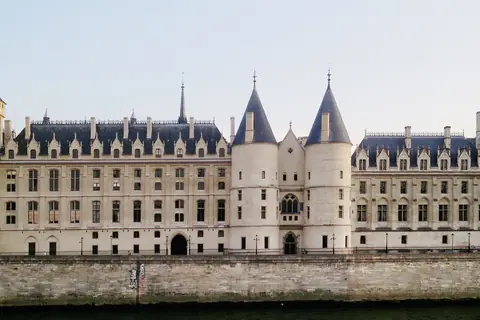
Paris · Fortified palace
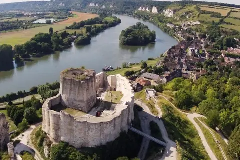
Les Andelys · Military fortress
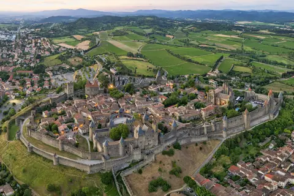
Carcassonne · Citadel
Bard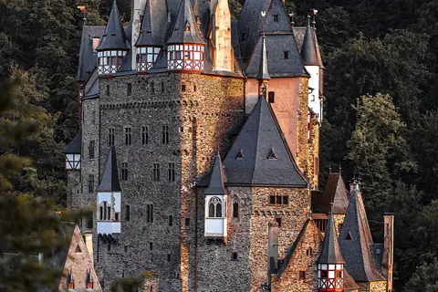
Wierschem · Military fortress
Free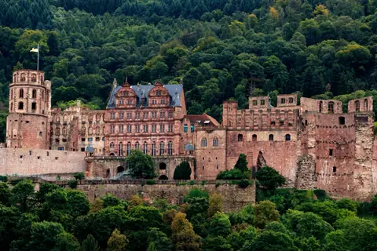
Heidelberg · Ruin / archaeological site
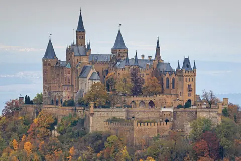
Hechingen · Residential castle
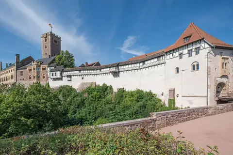
Eisenach · Military fortress
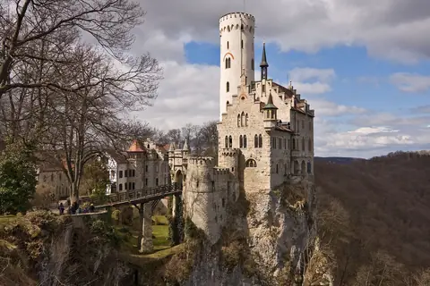
Honau · Residential castle
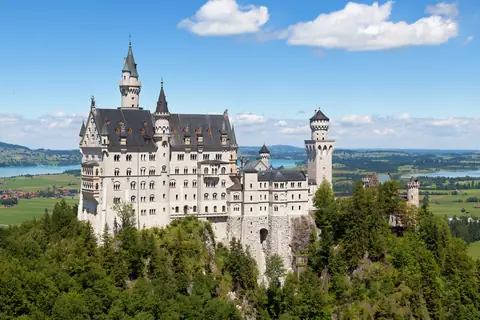
Schwangau · Residential castle
Bard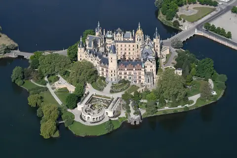
Schwerin · Royal palace
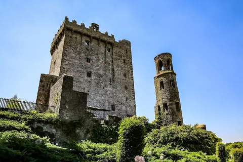
Blarney · Military fortress
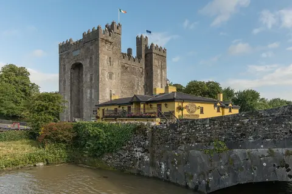
Bunratty · Military fortress
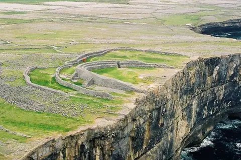
Inishmore, Îles d'Aran · Ruin / archaeological site
Free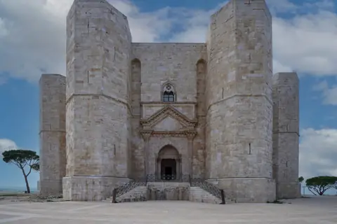
Andria · Military fortress
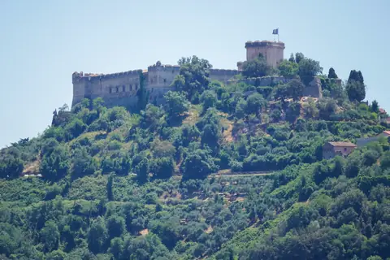
Sermoneta · Military fortress
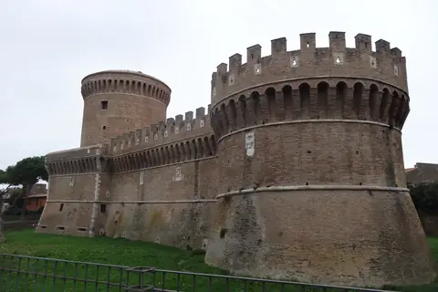
Ostia Antica · Military fortress
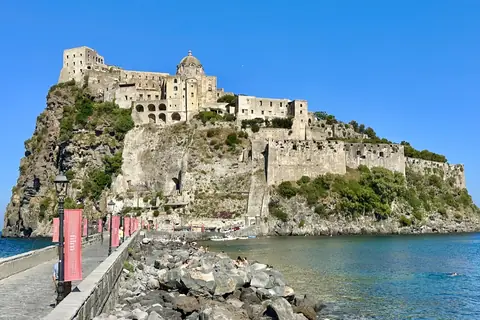
Ischia · Coastal / maritime fort
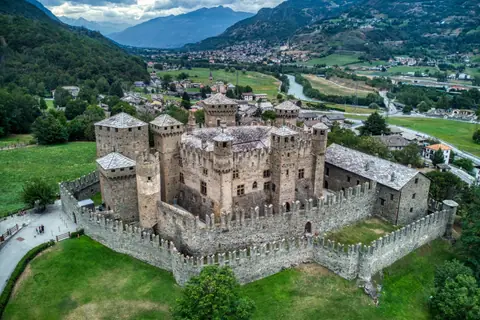
Fénis · Residential castle
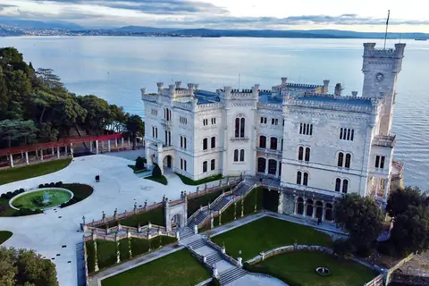
Trieste · Residential castle
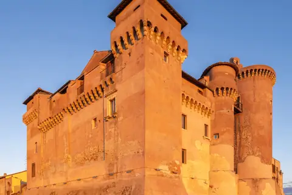
Santa Marinella · Coastal / maritime fort
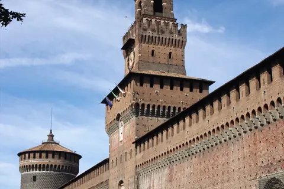
Milan · Citadel
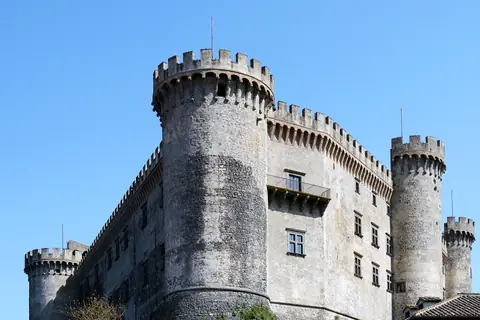
Bracciano · Residential castle
Rome · Citadel
Free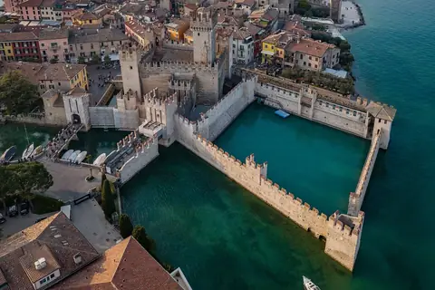
Sirmione · Military fortress
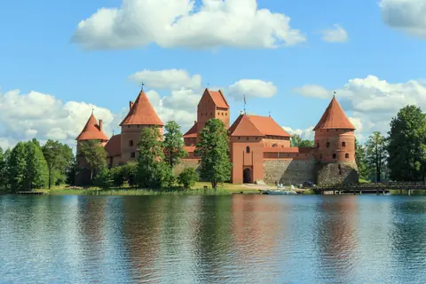
Trakai · Residential castle
Free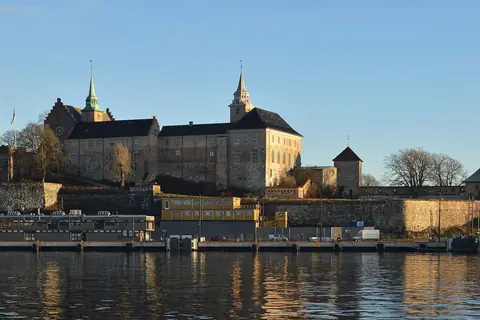
Oslo · Military fortress
Free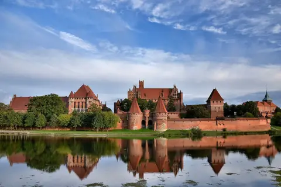
Malbork · Military fortress
Free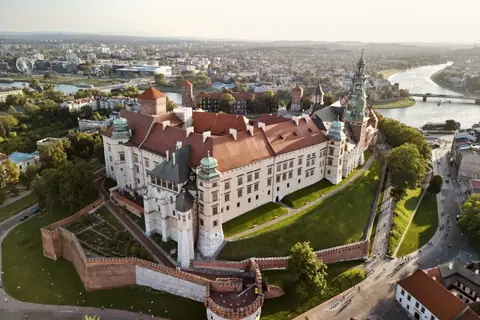
Cracovie · Fortified palace
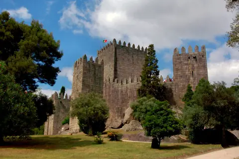
Guimarães · Military fortress
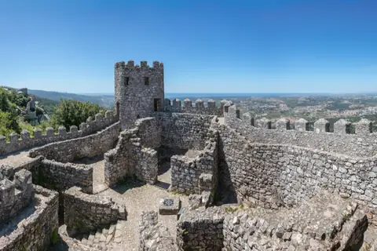
Sintra · Ruin / archaeological site
Sintra · Residential castle
FreeSintra · Residential castle
Lisbonne · Coastal / maritime fort
Bran · Military fortress
BardFreePredjama · Military fortress
FreeSégovie · Residential castle
FreeSéville · Fortified palace
Tolède · Fortified palace
Grenade · Fortified palace
BardPalma de Majorque · Residential castle
Belmonte · Residential castle
Loarre · Military fortress
Alicante · Military fortress
Almodóvar del Río · Military fortress
Coca · Residential castle
Jaca · Citadel
Veytaux · Coastal / maritime fort
FreeBodiam · Military fortress
Édimbourg · Military fortress
BardDornie · Military fortress
Bamburgh · Military fortress
Dumfries · Military fortress
Caernarfon · Citadel
Conwy · Military fortress
Édimbourg · Military fortress
Douvres · Military fortress
FreeÉdimbourg · Residential castle
Linlithgow · Royal palace
Falmouth · Coastal / maritime fort
St Mawes · Coastal / maritime fort
Stirling · Military fortress
Warwick · Military fortress
Windsor · Royal palace
BardChatham · Military fortress
Édimbourg · Royal palace
Londres · Military fortress
BardToronto · Residential castle
Hamilton · Residential castle
Québec · Castle hotel
FreeMontréal · Residential castle
Halifax · Military fortress
Ottawa · Castle hotel
Chambly · Military fortress
Kingston · Military fortress
Saint-Paul-de-l'Île-aux-Noix · Military fortress
Toronto · Military fortress
Louisbourg · Coastal / maritime fort
Lévis · Military fortress
Québec · Ruin / archaeological site
Québec · Military fortress
La Malbaie · Castle hotel
Mexico · Royal palace
FreeAsheville, Caroline du Nord · Residential castle
Alexandria Bay, New York · Residential castle
Collinsville, Illinois · Ruin / archaeological site
St. Augustine, Floride · Military fortress
Doylestown, Pennsylvanie · Residential castle
Dry Tortugas, Floride · Coastal / maritime fort
Baltimore, Maryland · Coastal / maritime fort
Charleston, Caroline du Sud · Coastal / maritime fort
Ticonderoga, New York · Military fortress
San Simeon, Californie · Residential castle
FreeHonolulu, Hawaï · Royal palace
Carthagène des Indes · Military fortress
FreeOllantaytambo · Military fortress
Cusco · Citadel
FreeSiem Reap · Citadel
FreeChongqing · Military fortress
Pékin · Fortified palace
BardTurpan · Citadel
Xi'an · Citadel
Pékin · Military fortress
FreeNankin · Military fortress
Jaipur · Fortified palace
FreeChittorgarh · Citadel
Gwalior · Citadel
Jodhpur · Citadel
BardDelhi · Fortified palace
Himeji · Military fortress
BardOsaka · Military fortress
FreeKyoto · Military fortress
Hikone · Military fortress
Kumamoto · Military fortress
Matsumoto · Military fortress
Kyoto · Fortified palace
Bahla · Military fortress
FreeSuwon · Citadel
FreeGalle · Coastal / maritime fort
Sigiriya · Citadel
BardFreeAl-Hosn · Military fortress
BardFreeAlexandrie · Coastal / maritime fort
Le Caire · Citadel
FreeGondar · Fortified palace
FreeElmina · Coastal / maritime fort
FreeCape Coast · Coastal / maritime fort
Mombasa · Coastal / maritime fort
FreeAït-Ben-Haddou · Citadel
FreeRabat · Citadel
Le Cap · Coastal / maritime fort
FreeSydney · Coastal / maritime fort
FreeLargs Bay, Adélaïde · Coastal / maritime fort
Queenscliff · Coastal / maritime fort
Newcastle · Coastal / maritime fort
Ballarat · Residential castle
Auckland · Military fortress
FreeSites marked “Free” are included in the app; a one-time purchase unlocks all the others.
Photos: Wikimedia Commons (free licenses), full credits.
Download Fort et Château on the App Store and set off to discover the world's fortresses.
Download on the App Store